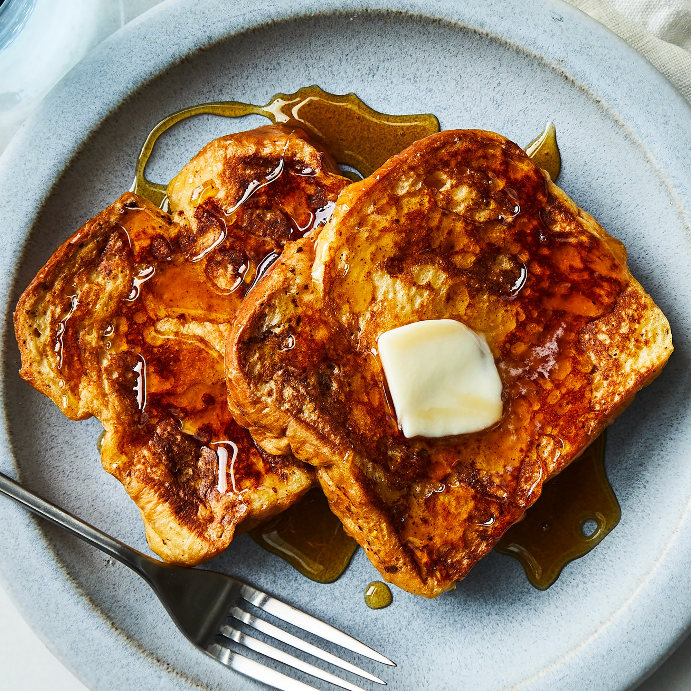

French Toast

This simple French toast recipe makes for a quick and easy
breakfast.
Spend Times
Prep: 5 mins
Cook: 10 mins
Total: 15 mins
Servings: 3
Yield: 6 slices
Ingredients
- ⅔ cup milk
- 2 large eggs
- 1 teaspoon vanilla extract (Optional)
- ¼ teaspoon ground cinnamon (Optional)
- salt to taste
- 6 thick slices bread
- 1 tablespoon unsalted butter, or more as needed
Nutrition Facts (Per)
Calories: 240
Protein: 10.6g
Carbohydrates: 33.6g
Fat: 6.4g
Cholesterol: 128.3mg
Sodium: 477.7mg
Directions
- Whisk milk, eggs, vanilla, cinnamon, and salt together in a shallow bowl.
- Lightly butter a griddle and heat over medium-high heat.
- Dunk bread in the egg mixture, soaking both sides. Transfer to the hot skillet and cook until golden, 3 to 4 minutes per side. Serve hot.